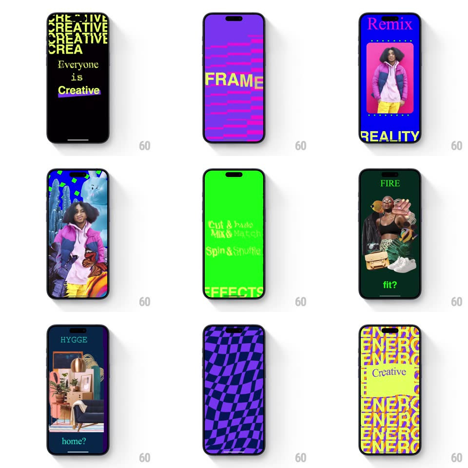

Media
Frame-by-frame

Rebuild this interaction 1:1: Shuffles' splash - a rapid-fire montage of full-bleed collage art and loud typographic frames (CREATIVE repeats, FRAME, REALITY, "Cut & Paste", "FIRE fit?", ENERGY) flashes by before landing on the SHUFFLES logo over a collage.

Rebuild this interaction 1:1: Shuffles' splash - a rapid-fire montage of full-bleed collage art and loud typographic frames (CREATIVE repeats, FRAME, REALITY, "Cut & Paste", "FIRE fit?", ENERGY) flashes by before landing on the SHUFFLES logo over a collage. ## Integration Integration: stack-agnostic spec - springs given as stiffness/damping, timed motions as duration + curve; map every value to your framework and animation library of choice. ## Scene Full-screen frames, each a different art-board: a layered travel collage with the SHUFFLES wordmark, a black board tiled with neon-yellow "CREATIVE" rows, a purple board with pink bars and giant yellow "FRAME", a dotted blue board with a cut-out person and yellow "REALITY", a flat red board reading "Cut & Paste", a dark green board reading "FIRE fit?", navy with "HYGGE home?", a warped purple checkerboard, and a yellow board tiled with "ENERGY". ## Motion spec Pattern: rapid-cut intro montage. - Each board slams in and holds ~300-450ms: enter with scale 1.06 -> 1 (fast ease-out, 120ms), hold, then hard cut to the next - no crossfades between boards. - Some boards carry internal motion during their hold: the "CREATIVE" rows scroll vertically, the checkerboard warps, the cut-out person slides in from the bottom of the dotted board. - Roughly 9 boards in ~4s, tempo slightly accelerating toward the end. - Final beat: the travel-collage board returns full-screen, the SHUFFLES wordmark scales on with a spring (0.8 -> 1, spring ~400/17, 350ms), and the intro hands off. ## Calibration - Cuts, not fades - the energy comes from hard transitions. - Text boards and collage boards alternate so the eye never settles. ## Reduced motion Boards crossfade at 500ms each. ## Don't miss - The first and last boards are the same collage - the montage is a loop back to identity. - The yellow "ENERGY" board has a torn-paper "Creative" patch - the collage aesthetic applies even to type boards.